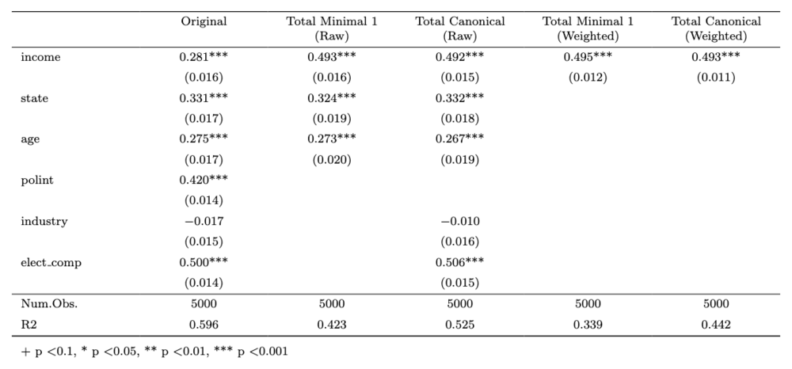
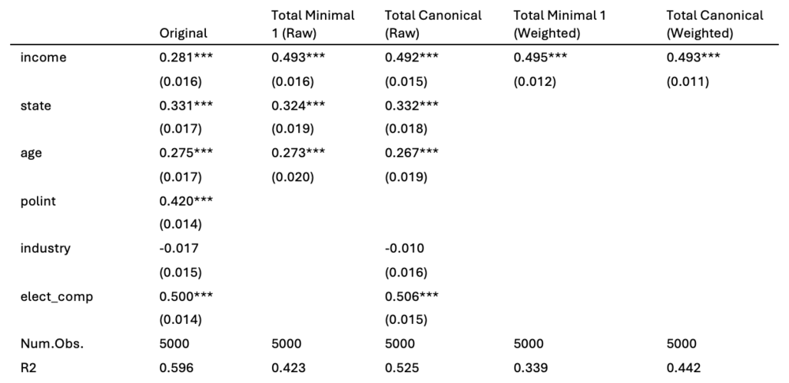
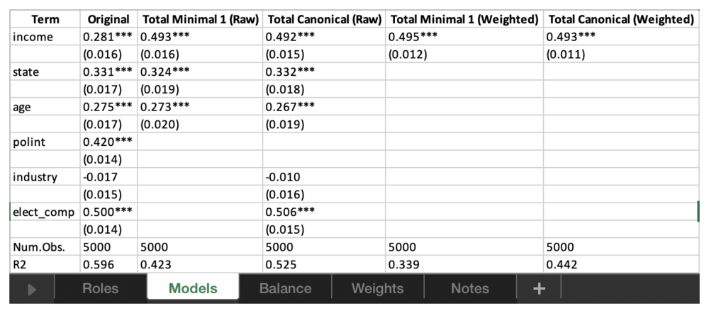

DAGassist reports are meant to leave your R console: as
an appendix table in a paper, a response to a reviewer, or a file for a
co-author. Users can easily export reports through two arguments.
type sets the format, and out sets the file
path and name. This article explains how to export your
DAGassist report. The examples use the voter-turnout data
from the homepage.
Formats at a glance
type |
Produces | out |
Also needs |
|---|---|---|---|
"console" (default) |
The report, printed in the console | Not used | |
"latex" |
A LaTeX fragment to \input{} into a
paper |
Optional; prints the fragment if omitted | modelsummary |
"word" or "docx"
|
A Word document | Required |
modelsummary, knitr,
rmarkdown, and pandoc 2.0+ |
"excel" or "xlsx"
|
An Excel workbook, one sheet per section | Required | modelsummary |
"text" or "txt"
|
A plain-text file with Markdown tables | Optional; prints if omitted |
modelsummary, knitr
|
"dotwhisker" or "dwplot"
|
A dot-and-whisker plot (PNG) | Optional; displays the plot if omitted |
The packages in the last column are suggested dependencies for each export format, so install them prior to exporting. RStudio ships with pandoc, so Word export works there without extra setup.
Generating individual and multiple reports
To produce every format at once, create a loop where each export is
the same DAGassist() call with a different
type and out:
out_dir <- tempdir()
formats <- c(latex = "report.tex",
word = "report.docx",
excel = "report.xlsx",
text = "report.txt",
dotwhisker = "report.png")
for (fmt in names(formats)) {
DAGassist(turnout_dag,
lm(turnout ~ income + state + age + polint + industry + elect_comp,
data = turnout_data),
type = fmt,
out = file.path(out_dir, formats[[fmt]]))
}
file.exists(file.path(out_dir, formats))
#> [1] TRUE TRUE TRUE TRUE TRUETo write a single file, drop the loop:
Choosing what goes in the report
The same arguments that specify the console output contents affect exported reports:
-
showselects sections.show = "models"exports only the model comparison, whereasshow = "roles"exports only the roles table. -
labelsreplaces variable names with readable labels. It takes a named character vector, or a data frame. -
estimandadds the total- and direct-effect columns described in Total and direct effects. Weight and balance diagnostics are exported alongside them. -
excludeadds canonical-set variants without neutral controls, as extraCanon. (-NCO)orCanon. (-NCT)columns. -
omit_interceptandomit_factors(bothTRUEby default) hide the intercept and factor-level rows from the table. The terms still enter the regression.
For a publication table, set labels and
show = "models":
turnout_labels <- c(
income = "Income",
state = "State",
age = "Age",
polint = "Political interest",
industry = "Industry",
elect_comp = "Election competitiveness"
)
DAGassist(turnout_dag,
lm(turnout ~ income + state + age + polint + industry + elect_comp,
data = turnout_data),
labels = turnout_labels,
show = "models", type = "text", verbose = FALSE)| Term | Original | Minimal 1 | Canonical |
|---|---|---|---|
| Income | 0.281*** | 0.493*** | 0.492*** |
| (0.016) | (0.016) | (0.015) | |
| State | 0.331*** | 0.324*** | 0.332*** |
| (0.017) | (0.019) | (0.018) | |
| Age | 0.275*** | 0.273*** | 0.267*** |
| (0.017) | (0.020) | (0.019) | |
| Political interest | 0.420*** | ||
| (0.014) | |||
| Industry | -0.017 | -0.010 | |
| (0.015) | (0.016) | ||
| Election competitiveness | 0.500*** | 0.506*** | |
| (0.014) | (0.015) | ||
| Num.Obs. | 5000 | 5000 | 5000 |
| R2 | 0.596 | 0.423 | 0.525 |
- p-value legend: + < 0.1, * < 0.05, ** < 0.01, *** < 0.001.
- Controls (minimal): {age, state}.
- Controls (canonical): {age, elect_comp, industry, state}.
LaTeX
type = "latex" writes a fragment, not a full document,
so you \input{} it where the table should appear. The
tables use tabularray’s
longtblr, so long tables break across pages. Add these
lines to your preamble:
\usepackage{graphicx} % rotated column headers in the roles table
\usepackage{tabularray}
\UseTblrLibrary{booktabs,siunitx}The full report is labelled tab:dagassist, and a
models-only table (show = "models") is labelled
tab:dagassist-models, so you can refer to either with
\ref{}.
Without out, the fragment is printed to the console,
ready to paste into Overleaf:
DAGassist(turnout_dag,
lm(turnout ~ income + state + age + polint + industry + elect_comp,
data = turnout_data),
labels = turnout_labels,
show = "models", type = "latex")
Word
type = "word" builds the report as Markdown and converts
it to .docx with pandoc. To match a journal’s or your
department’s styles, point DAGassist at a reference
document once per session; pandoc copies its fonts, heading styles, and
table styles:
options(DAGassist.ref_docx = "my-template.docx")
Excel
type = "excel" writes one sheet per section of the
report, which makes the results easy to share with co-authors or
reformat by hand:
readxl::excel_sheets(file.path(out_dir, "report.xlsx"))
#> [1] "Roles" "Models" "Balance" "Notes"A Weights sheet is added when the report includes
weighted estimates (estimand = "total" or
"direct").

Plain text and Markdown
type = "text" writes the report with Markdown tables.
The file reads cleanly as plain text and renders as formatted tables on
GitHub or in a reviewer response. Without out, it prints to
the console; in an R Markdown or Quarto document, set the chunk option
results = "asis" to render the tables, as this site
does.
Dot-and-whisker plots
type = "dotwhisker" plots the exposure’s estimate and
95% confidence interval in each model. Without out, the
plot is displayed; with out, it is saved as an 8 × 6 inch
PNG at 300 dpi.
DAGassist(turnout_dag,
lm(turnout ~ income + state + age + polint + industry + elect_comp,
data = turnout_data),
type = "dotwhisker")